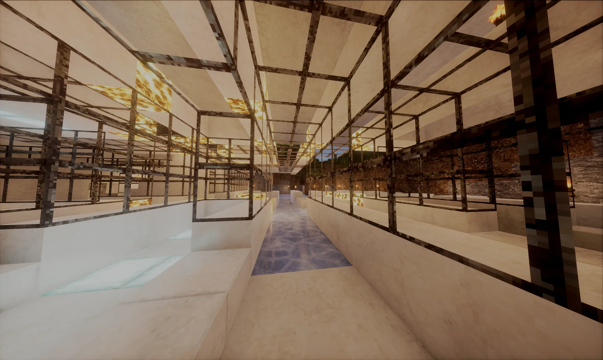

原版优先的生存
体验尽量靠近原版，以微调维持公平，并适度替代或增加有趣的新玩法。

「公益神人土豆原版风味生存优化之服务器」
服务器建立之初的愿景是腐竹与几位舍友为了能在任何时间一起消遣而建立的，如今开放是希望将当初那份欢乐分享与更多人。
如同其名字，服务器的性能一般般，虽然并非专业服务器，但是足够朋友间一同玩耍。（最近土豆变强了不少）土豆平时种植在腐竹家，平时靠腐竹攒米发育，以及几个原始咕咚喂养，大土豆会努力服务大家的～～
服务器期望进行长周目运营，而非伴随短期存档的重置而导致记忆的消失。这里希望搭建一个富有社交性与娱乐性，使人们收获真面情绪与乐趣的地方。
在以 Java 版生存为主基调上，服务器增添了不少更实用、趣味的插件，使其兼具建筑、生电、冒险、经济交易等更多主题。愿你在游玩时，也能收获你的那份欢乐。
为长寿存档和真实乐趣服务。
少一些负担，多一点属于自己的时间。
体验尽量靠近原版，以微调维持公平，并适度替代或增加有趣的新玩法。
非营利运营，由玩家社区共同维护、共同创造，所有支持都会回到大土豆的成长里。
Java 版与基岩版无障碍互通，无论你喜欢哪一种版本，都可以畅玩本服。
希望进行长周目运营，让玩家一起建设的世界，成为值得被记住的档案。